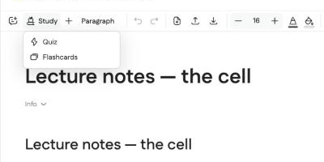
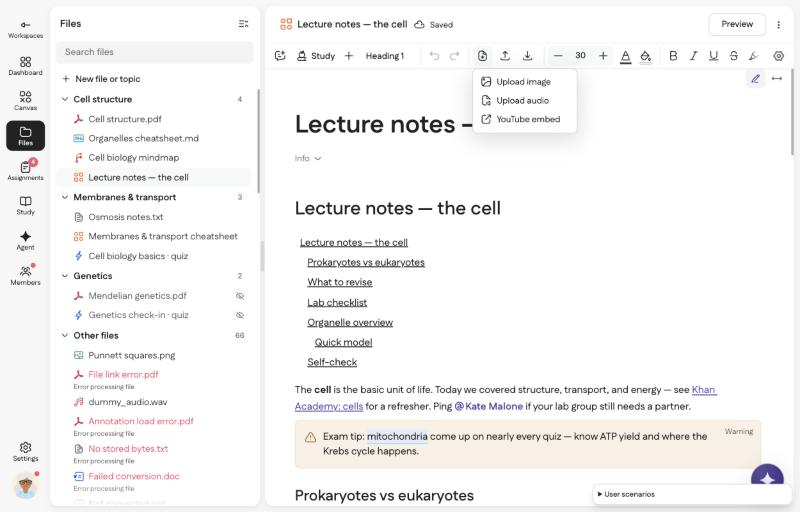
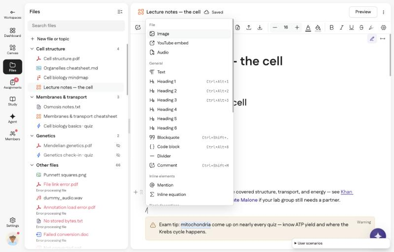
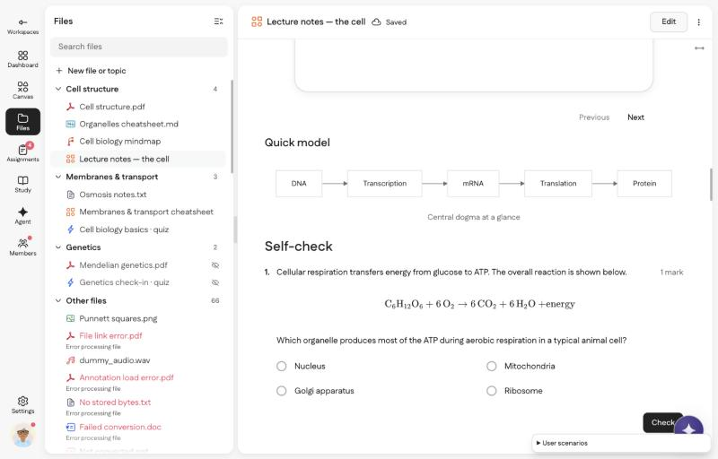
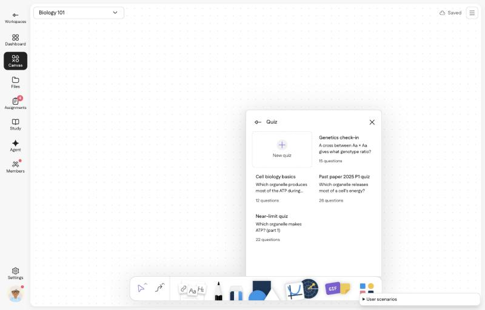
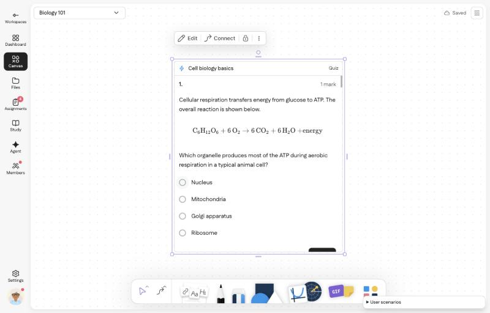
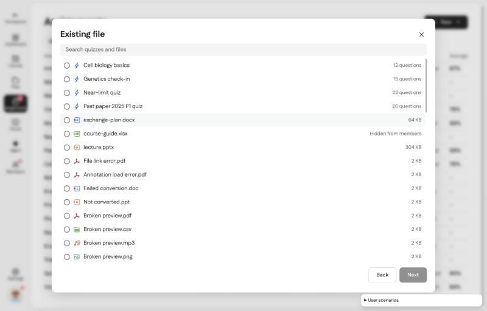
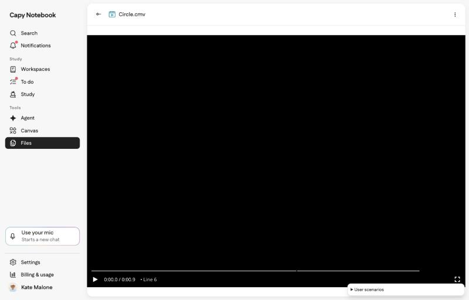

Embed existing quizzes, flashcards and films
Three ways to put an existing quiz, flashcard set or film into a note, and a film onto the canvas. Everything embedded is view-only in its host. Each option is drawn at desktop width and at 360 px, with the app's own tokens (capy latte and mocha) and its existing components named beside each piece.
What the app does now
A note's Study menu and its /quiz and /flashcards commands always make a new quiz or set inside the note. Images and audio are always uploaded from the computer. Only the canvas's Misc panel and the New graded quiz's Existing file dialog let you pick something that already exists. Screenshots from this worktree with mock data.








One row per kind, opening the Existing file dialog Picked, with changes
Quiz and Flashcards stay one row each in the Study menu and the slash menu. When the workspace has one, the row opens the dialog New graded quiz uses, listing the workspace's quizzes or sets, with Create new under the list (a new set starts on a real sample card); with none it makes a new one at once, as today. Upload media and the slash menu get Manim film, which always opens the dialog listing the workspace's films. The film plays in the note at the column's width.
The cell is the basic unit of life. Today we covered structure, transport, and energy.
Study menu (ToolbarStudyMenu, ToolbarPopoverRow): Quiz and Flashcards as today. Each opens the dialog when the workspace holds one (hasQuiz, hasFlashcards on the workspace read), else makes a new one at once.
Upload media (MediaUploadMenu): Manim film (so it isn't read as an ordinary video) always shows and opens the same dialog with the workspace's films. Films never upload here: a film is a file of the workspace, uploaded on the Files page.
Slash menu (editorCommands.ts): /quiz and /flashcards behave as the Study rows; a new Manim film in File, found by /manim or /film.
No ManimGX films uploaded yet
Dialog: SimpleDialog with the body of useExistingQuizPicker: SearchInput and PickList radio rows (FileMenuRow, FileIcon, name, meta). Create new (quiz and flashcards only, bordered) sits right under the last row; the footer has Cancel and Insert.
Create new: a new quiz starts on a blank question as today; a new set's first card is filled with a real sample (Photosynthesis / How plants turn light, water and carbon dioxide into sugar and oxygen), so the embed never looks empty.
Scope: the note's workspace only; a note in no workspace lists the person's own items in no workspace.
Insert: a quiz or set is copied into the note (its own embedded copy, as a paste from another note is). A film is a live link to its file.
No films: the dialog opens on a short blank line, with room for a link to the exporter later.
The derivative is the slope of the tangent. Watch the secant close in on it:
The same idea gives the rate a reaction runs at any moment.
The same film in Edit, selected
View: the film fills the text column with no frame, ManimGX's own bar over its foot (play, time, line, scrubber, full screen). A video film shows the browser's <video> controls instead. No caption.
Edit: the film is a void block. It still plays, with a flat BlockToolbar: Open (the file viewer), Replace (the picker again), Delete. No resize in this pass.
Load: FilmView mounts only near the screen (useNearScreen, as embeds), so a note with films loads no engine until one is near.
Gone: a trashed or unreadable film draws the unsupported-block line's look: "This film can't be shown".
Card: the material card's shape (CanvasMaterialCards: header row with icon, name and kind, then the body), the body a film. The toolbar has Open instead of Edit: a film is view-only.
Adding: the Misc panel's From the workspace gets a Film tile (boardTools.ts renderMaterials), listing the workspace's films as quizzes are listed.
Off screen: like a quiz card, a far card draws a still (decision 5), not a running player.
The cell is the basic unit of life.
The derivative is the slope of the tangent. Watch the secant close in on it:
The same idea gives the rate a reaction runs at any moment.
The dialog fills the screen, as every SimpleDialog does on a phone: Insert in its header, Create new under the last row, Cancel as the header's ×. The film runs the full text width (328 px), and the bar shortens to play, time, scrubber and full screen.
The canvas's Misc tiles in the note too: New first, then what exists
Study opens a panel with Quiz, Flashcards and Film tabs. Each tab is the canvas Misc panel's grid: a New tile, then the workspace's items. One picker on both surfaces. New becomes two clicks (open, then New). A film shows its first frame until played.
The cell is the basic unit of life.
Panel: a Popover drawing the Misc panel's material grid (boardTools.ts renderMaterials, thumbnail, the New tile), ported to React or shared as one component the board and the note both mount. Tabs are the app's Tabs.
Filter: shown from FILTER_FROM items, as on the canvas.
Slash: /quiz, /flashcards and /film open the panel on their tab instead of creating at once.
Scope: the note's workspace only, as the workspace canvas lists. A note with no workspace lists the person's own items (the account Canvas page's rule, with a workspace chip on each tile).
No New tile: a film comes from the exporter and is uploaded on the Files page. Each tile shows the film's first frame (decision 5: someone has to make that still).
- Tiles: the canvas Misc tiles, same sizes.
- Film poster: a new still per film (none exists today).
The derivative is the slope of the tangent. Watch the secant close in on it:
Pressed, the poster becomes the player in place, with ManimGX's bar:
Before play: the first frame with a round play button and the length. Nothing loads but the still: the 1.9 MB engine and the film come on the press.
After: FilmView in place, its own controls. No caption by default.
Lightest for a note with several films; costs a poster per film.
Card: no header and no border: the film alone, like a placed image (affine:image). Its name is on the selection toolbar, as Open.
Differs from the quiz and set cards, which keep their header.
The cell is the basic unit of life.
The derivative is the slope of the tangent. Watch the secant close in on it:
The same idea gives the rate a reaction runs at any moment.
The panel opens as a bottom sheet (Drawer), two tiles a row.
One "From files" command for every kind, in the Files page's rows
New stays where it is. One command, From files, opens a wide dialog listing quizzes, sets and films together in the Files page's columns, with its Filter. A film sits in the note as one row and opens in the film viewer.
The cell is the basic unit of life.
Upload media (MediaUploadMenu) gets From files on top. The Study menu is unchanged (New only).
Slash: one command, /from files, keywords quiz, flashcards, film.
| Name | Workspace | Added |
|---|---|---|
| Derivative.cmv | Biology 101 | 1 hour ago |
| Cell biology basics | Biology 101 | 2 hours ago |
| Organelles | Biology 101 | Yesterday |
| Integration drill | Calculus II | 3 days ago |
| Menger sponge.cmv | – | Last week |
Dialog: SimpleDialog with the Files page's ItemsList in list view (Name, Workspace, Added; no Size, no row menu), its Filter (FilterMenu) fixed to the three kinds, reading GET /api/items.
One click picks a row, Insert puts it in. Every workspace the person is in shows, the note's first by sort.
Most to build: the list needs a pick mode and the items endpoint needs quizzes and sets.
The derivative is the slope of the tangent. Watch the secant close in on it:
The same idea gives the rate a reaction runs at any moment.
Row: still, name, length and a bordered Play. Play opens the film viewer (FilmView) in a SimpleDialog at full size, as a canvas card's Edit opens CanvasMaterialDialog.
Cheapest to draw, keeps the note short; the film is never watched beside its text.
Card: the link card's shape (affine:embed-capy-link: a YouTube link shows its poster and name). Double-click opens the film dialog.
The derivative is the slope of the tangent. Watch the secant close in on it:
The same idea gives the rate a reaction runs at any moment.
The Files page's phone rows: name over workspace and time. The film row drops its length.
Side by side
| A · menu rows + Existing dialog | B · Misc tiles everywhere | C · one From files list | |
|---|---|---|---|
| New quiz | One click, as today | Two clicks | One click, as today |
| Picker reused | useExistingQuizPicker body, as is | Canvas Misc grid (Lit), port or share | ItemsList, needs a pick mode |
| Film in a note | Player in place, loads near screen | Still, player on press | Row, plays in a dialog |
| Canvas card | Material card shape | Bare film, like an image | Link card shape |
| Needs a still per film | Only for far canvas cards | Yes, everywhere | Yes, everywhere |
| Build size | Smallest | Medium | Largest |
Recommended: A It adds rows to menus that exist, reuses the one Existing picker the app already ships, keeps New at one click, and draws the film like an image in the note's flow. Option B's play-on-press could be added to A later if notes with many films prove heavy.
Decisions for Epo
- An existing quiz or set: copy or link? Today a note's quiz is a child row of the note (
parent_material_id); pasting another note's quiz makes a copy. A copy (as New graded quiz's Existing does) keeps that model: same rooms, trash, share and quota rules, no new access check, but later edits to the original don't reach the note. A live link means a new kind of reference whose readers need the original's access, and whose edits in the note would change the original. Moodle offers both (copy or "shortcut"); Notion's linked database is a live link; Google's chart can stay linked or be a copy. Proposed: copy. - A film from another workspace, or private. A film is a file, and a link to it needs every reader of the note to be able to read it. Options: list only the note's workspace's films, plus your own films in no workspace for a note in no workspace (proposed); or copy the file into this workspace on insert (counts quota again); or show readers who can't open it a "You can't open this film" line (Notion's synced blocks do this).
- A film hidden from members. Insert it anyway (members see the can't-open line) or leave hidden films out of the list.
- The film is trashed or deleted. Proposed: the block stays and says "This film can't be shown" (the unsupported-block line's look); Restore brings it back. Nothing deletes the block for the user.
- A still per film. A canvas card off screen (and options B and C everywhere) needs a first frame. Nothing makes one today: films skip ingest, so no
thumbs/key. Either the exporter writes a poster into the CMV header, or the browser renders frame 0 at upload and sends it with the file. - Shared notes. A public note's films must play for anyone with the link: the share read hands out the film's bytes like it hands out the embedded quizzes (
anonymousEmbeds). Allowed for every film, or only films whose own file is shared? - Does the agent write films? The catalog's
edit.agentfor film: none (proposed), or afilmfence naming a file id.